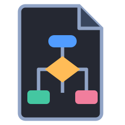

Crea e collega
Trascina le caselle sulle frecce. Distingui i rami e trova spazio per la tua logica.

FrociartHai un progetto?DISEGNA · CONTROLLA · PROVA
Costruisci il tuo flowchart, segui il percorso e scopri come funziona. Sul tuo dispositivo.
Windows 10/11 · Nessun account nell'app · Funziona offline
RIPARTI DAL TUO PROGETTO
Sceglilo qui e aprilo in Frociart. Il contenuto resta nel browser: non viene caricato su un server.
Oppure trascinalo qui · massimo 4 MB
Non hai ancora l'app? Scarica Frociart, installala e riapri il file. L'apertura diretta dal browser è disponibile su Windows.
Trascina le caselle sulle frecce. Distingui i rami e trova spazio per la tua logica.
Controlla il diagramma e prova valori diversi. Guarda dove passa ogni decisione.
Lezioni guidate, esempi e prove per trasformare un'idea in un programma.
Il pacchetto di configurazione aggiunge icona e doppio clic ai progetti.
Apri l'EXE. Puoi attivare l'associazione dei file anche da Altro.
Disegna e impara dal telefono. Installa l'APK e apri i progetti dall'app.